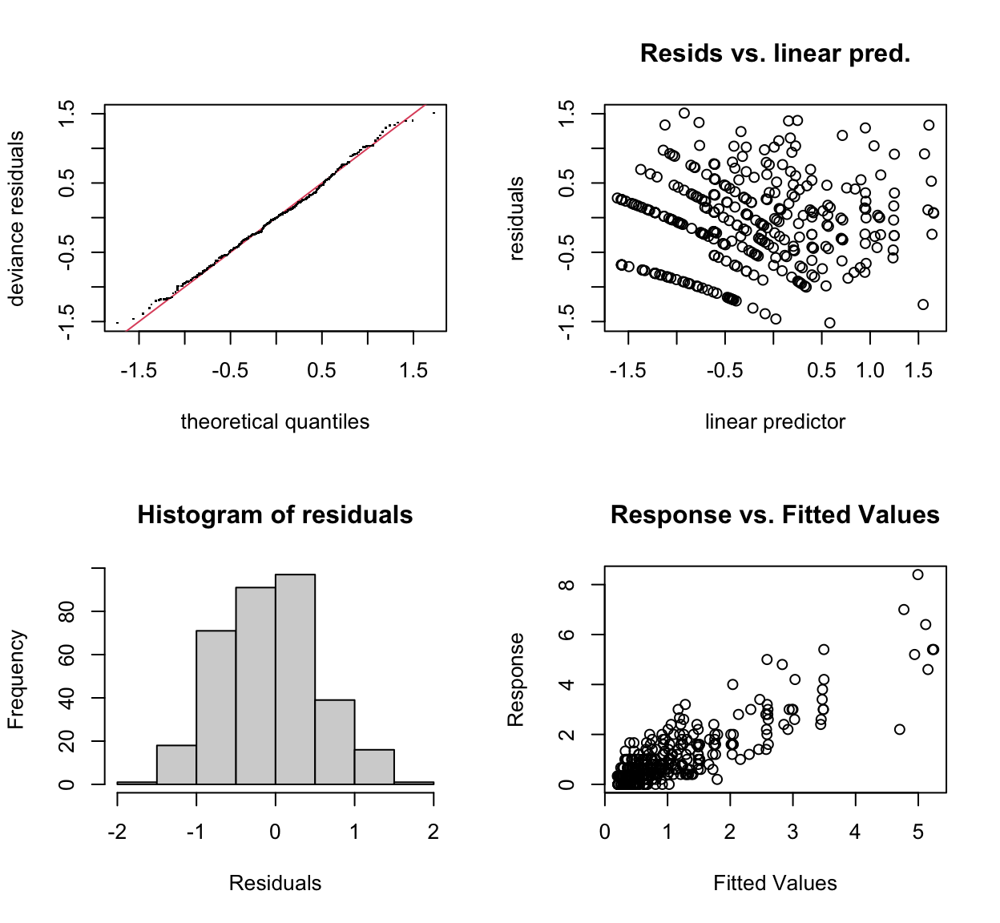

Note on Further Refinement
I realised I neglected to explore including the pots at each station and the plants in each pot for the random effects.
The mod_new now includes these and the model fit is further improved with their inclusion.
-ahs 2024-04-28
Introduction
Iâve recently just wrapped up an analysis with co-authors looking at the aerial dispersal of peanut smut spores from infested fields in Argentina (Paredes et al. 2024; Edwards Molina, Sparks, and Paredes 2022). In this paper, we used a Generalised Additive Model (GAM) to describe how far the spores spread and what was linked with this in the R programming environment. This model was particularly difficult for me to fit initially due to spatial autocorrelation effects due to the spore trap locations and time-slices that were used to collect the spore counts. It also had six different fields where data were collected. So there were lots of things going on here, six fields, traps on transects in four directions from the centroid with traps located four distances on the transect and the time in which spores were collected overlapped from 0-90, 0-180 and 0-270 minutes.
To deal with all of this I spent lots of time reading up on fitting GAMs, but this time, I was reading about using random effects in the GAM, which is something Iâd not done in the past. I used GAMs in the past for work in my PhD dissertation (Sparks et al. 2014; Sparks 2024) and in âThe role of conidia in the dispersal of Ascochyta rabieiâ (Khaliq et al. 2020b, 2020a), which brings me to todayâs post.
To handle all of the issues with multiple field sites and the spatio-temporal autocorrelation, I used random effects in my GAM for Paredes et al. (2024). However, I realised Iâd not used random effects for this work (Khaliq et al. 2020b, 2020a). So, to rectify this, I thought Iâd go back to the published work and see if I could improve my modelâs fit to the data using random effects.
As we set up the research compendium as an R package, itâs easy enough to install it and get started working with the data and reproduce the work published in Khaliq et al. (2020b).
We assume that you have the R package {devtools} installed, if not, use install.packages("devtools").
Getting Started
library("devtools")
install_github("https://github.com/adamhsparks/ChickpeaAscoDispersal")Now we can load the data, lesion_counts and summary_weather, from {ChickpeaAscoDispersal} and create the dat object used to fit the GAM in the original paper.
We will use set.seed() here to ensure that the same results are obtained when checking the model fits.1
library("tidyverse")
library("ChickpeaAscoDispersal")
set.seed(27)
dat <-
left_join(lesion_counts, summary_weather, by = c("site", "rep"))
summary(dat) SpEv site rep distance
Curyo Rain 1 :56 Curyo : 56 1:168 Min. : 0.00
Horsham Irrg 1:56 Horsham dryland :112 2:112 1st Qu.:10.00
Horsham Irrg 2:56 Horsham irrigated:168 3: 56 Median :25.00
Horsham Mixd 1:56 Mean :32.68
Horsham Rain 1:56 3rd Qu.:50.00
Horsham Rain 2:56 Max. :75.00
station transect plant_no pot_no
Min. : 1.000 Min. : 1.0 Min. :3.000 Min. : 1.00
1st Qu.: 2.000 1st Qu.: 3.0 1st Qu.:3.000 1st Qu.:14.75
Median : 4.000 Median : 5.5 Median :5.000 Median :28.50
Mean : 4.643 Mean : 5.5 Mean :4.286 Mean :28.50
3rd Qu.: 7.000 3rd Qu.: 8.0 3rd Qu.:5.000 3rd Qu.:42.25
Max. :10.000 Max. :10.0 Max. :5.000 Max. :56.00
counts_p1 counts_p2 counts_p3 counts_p4
Min. : 0.000 Min. :0.000 Min. : 0.000 Min. : 0.000
1st Qu.: 0.000 1st Qu.:0.000 1st Qu.: 0.000 1st Qu.: 0.000
Median : 1.000 Median :0.000 Median : 0.000 Median : 1.000
Mean : 1.243 Mean :1.021 Mean : 1.096 Mean : 1.406
3rd Qu.: 2.000 3rd Qu.:2.000 3rd Qu.: 2.000 3rd Qu.: 2.000
Max. :12.000 Max. :8.000 Max. :11.000 Max. :11.000
NA's :2 NA's :2 NA's :2 NA's :124
counts_p5 degrees ptype m_lesions
Min. : 0.000 Min. : 10.0 Length:336 Min. :0.0000
1st Qu.: 0.000 1st Qu.: 65.0 Class :character 1st Qu.:0.3333
Median : 1.000 Median : 95.0 Mode :character Median :0.6667
Mean : 1.333 Mean :118.0 Mean :1.0802
3rd Qu.: 2.000 3rd Qu.:127.5 3rd Qu.:1.4000
Max. :14.000 Max. :360.0 Max. :8.4000
NA's :132 NA's :2
mws ws_sd mwd sum_rain
Min. :1.903 Min. :0.905 Min. :234.7 Min. : 0.8
1st Qu.:2.233 1st Qu.:1.290 1st Qu.:272.7 1st Qu.: 4.6
Median :3.331 Median :2.031 Median :321.7 Median :11.0
Mean :3.554 Mean :1.867 Mean :306.3 Mean : 9.6
3rd Qu.:3.996 3rd Qu.:2.230 3rd Qu.:333.7 3rd Qu.:11.6
Max. :6.532 Max. :2.713 Max. :353.5 Max. :18.6
Fitting the GAMs
With the data now loaded in our R session, we can fit the original GAM as published for us to compare against and see if we canât improve it.
Original GAM
First, fit the original model as published.
library("mgcv")
mod_org <-
gam(
m_lesions ~ s(distance, k = 5) +
s(mws, k = 5) +
s(sum_rain, k = 5),
data = dat,
family = tw()
)
summary(mod_org)
Family: Tweedie(p=1.044)
Link function: log
Formula:
m_lesions ~ s(distance, k = 5) + s(mws, k = 5) + s(sum_rain,
k = 5)
Parametric coefficients:
Estimate Std. Error t value Pr(>|t|)
(Intercept) -0.22823 0.04098 -5.569 0.0000000539 ***
---
Signif. codes: 0 '***' 0.001 '**' 0.01 '*' 0.05 '.' 0.1 ' ' 1
Approximate significance of smooth terms:
edf Ref.df F p-value
s(distance) 3.496 3.855 123.776 < 0.0000000000000002 ***
s(mws) 1.992 2.092 0.824 0.45080
s(sum_rain) 2.812 2.879 5.493 0.00168 **
---
Signif. codes: 0 '***' 0.001 '**' 0.01 '*' 0.05 '.' 0.1 ' ' 1
R-sq.(adj) = 0.674 Deviance explained = 61.2%
-REML = 309.96 Scale est. = 0.36397 n = 334New GAM With Random Effects
Now fit a model with random effects for the site (Curyo or Horsham), rep (3) and station (10 per each of 10 transects), pot number and plant number to see if it improves the model fit to the data.
mod_new <-
gam(
m_lesions ~ s(distance, k = 5) +
s(mws, k = 5) +
s(sum_rain, k = 5) +
s(site, rep, station, pot_no, plant_no, bs = "re"),
data = dat,
family = tw()
)
summary(mod_new)
Family: Tweedie(p=1.043)
Link function: log
Formula:
m_lesions ~ s(distance, k = 5) + s(mws, k = 5) + s(sum_rain,
k = 5) + s(site, rep, station, pot_no, plant_no, bs = "re")
Parametric coefficients:
Estimate Std. Error t value Pr(>|t|)
(Intercept) -0.08424 0.06155 -1.369 0.172
Approximate significance of smooth terms:
edf Ref.df F
s(distance) 3.650 3.924 65.908
s(mws) 1.919 2.049 1.997
s(sum_rain) 2.797 2.878 5.440
s(site,rep,station,pot_no,plant_no) 4.924 6.000 4.058
p-value
s(distance) < 0.0000000000000002 ***
s(mws) 0.29429
s(sum_rain) 0.00125 **
s(site,rep,station,pot_no,plant_no) 0.0000601 ***
---
Signif. codes: 0 '***' 0.001 '**' 0.01 '*' 0.05 '.' 0.1 ' ' 1
R-sq.(adj) = 0.71 Deviance explained = 64.5%
-REML = 301.99 Scale est. = 0.36131 n = 334Here weâve added a new line, s(site, rep, station, pot_no, plant_no, bs = "re") for the random effects.
This indicates that we now have a smoothed term for âsiteâ, ârepâ (replicate), and âstationâ with bs = "re", where the basis (bs) for the smooth is a random effect (re).
We can see that the \(R^2\) value has increased, 0.7099145 vs 0.6737655 and that the deviance explained has also increased, 64.5% vs 61.2%.
In the original paper, we used AIC to compare models to ensure we didnât over fit and used the most parsimonious model possible. As weâve added new terms itâs best to check to ensure that weâve not added unnecessary complexity to the model.
Compare AIC Values
library("broom")
models <- list(mod_org = mod_org,
mod_new = mod_new
)
mod_aic <- map_df(models, glance,
.id = "model") %>%
arrange(AIC)
mod_aic# A tibble: 2 Ã 8
model df logLik AIC BIC deviance df.residual nobs
<chr> <dbl> <dbl> <dbl> <dbl> <dbl> <dbl> <int>
1 mod_new 14.3 -271. 578. 645. 129. 320. 334
2 mod_org 9.30 -288. 599. 644. 141. 325. 334The AIC does improve with the new model, 578 to the originalâs, 599, enough to likely warrant the added complexity to the model Iâd say. It is of note that the BIC is larger for the new model, 645, to the originalâs, 644, so further diagnostics should be used as we did in the paper.
Check Using Model Fit With Descriptive Statistics and Figures
Lastly, we can use gam.check() as in the paper to evaluate the models fitness.
Original Khaliq et al. Model
gam.check(mod_org)
Method: REML Optimizer: outer newton
full convergence after 8 iterations.
Gradient range [-0.0000004288943,0.0000002610557]
(score 309.9554 & scale 0.3639671).
Hessian positive definite, eigenvalue range [0.3685077,2978.832].
Model rank = 13 / 13
Basis dimension (k) checking results. Low p-value (k-index<1) may
indicate that k is too low, especially if edf is close to k'.
k' edf k-index p-value
s(distance) 4.00 3.50 0.87 0.025 *
s(mws) 4.00 1.99 0.98 0.535
s(sum_rain) 4.00 2.81 1.00 0.625
---
Signif. codes: 0 '***' 0.001 '**' 0.01 '*' 0.05 '.' 0.1 ' ' 1Updated Model With Random Effects
gam.check(mod_new)
Method: REML Optimizer: outer newton
full convergence after 10 iterations.
Gradient range [-0.00007401781,0.00003895846]
(score 301.9894 & scale 0.3613127).
Hessian positive definite, eigenvalue range [0.3078677,2958.934].
Model rank = 22 / 22
Basis dimension (k) checking results. Low p-value (k-index<1) may
indicate that k is too low, especially if edf is close to k'.
k' edf k-index p-value
s(distance) 4.00 3.65 0.91 0.13
s(mws) 4.00 1.92 1.04 0.88
s(sum_rain) 4.00 2.80 1.05 0.91
s(site,rep,station,pot_no,plant_no) 9.00 4.92 NA NAThe original modelâs âdistanceâ term \(k-index\) was a bit iffy as it was indicated to be significant, but otherwise acceptable for what we wanted as we werenât forward predicting, just explaining what happened at our trial sites. It indicated that the \(k\) value was too low, which is fair, we only had \(k = 5\) due to a lack of degrees of freedom. Adding the random effects increased the estimated degrees of freedom available and resulted in a better fitting model in the new modelâs form with random effects included.
The qq-plot and other diagnostics for the new model also show a slight visual improvement over the original model. Especially the response vs. predicted variables showing much less of a pattern.
Conclusion
In conclusion, this was a fun little exercise that allowed me to explore some new things Iâve learned along the way and apply them to some older work very easily. This isnât worth going back to the original paper and making any changes as it doesnât change the story one bit. However, it is nice to see that I was able to take the original work and so easily reproduce it and then upgrade it and confirm what I thought and will be useful information for future work.
Further Resources
Hereâs a few more resources that are useful for GAMs.
- A Free, Interactive Course using mgcv from Noam Ross, highly recommended, great exercises and examples.
- GAMbler from Nicholas Clark, ecology focus but has great support for GAMs.
- From the bottom of the heap from Gavin Simpson, I already mentioned this blog at the beginning of the post, but itâs worth mentioning again for the great materials that Ben has put together and shared.
I also learned something new by writing this blog post. When I started I didnât realise that
gam.check()used random draws to check the fit. In the case of these models, it can make a difference in the significance of the âdistanceâ term. In most cases itâs not significant when checking the fit of the new model, but in some cases it remains significant as with the original model. The seed chosen (at random) does make it insignificant.â©ï¸